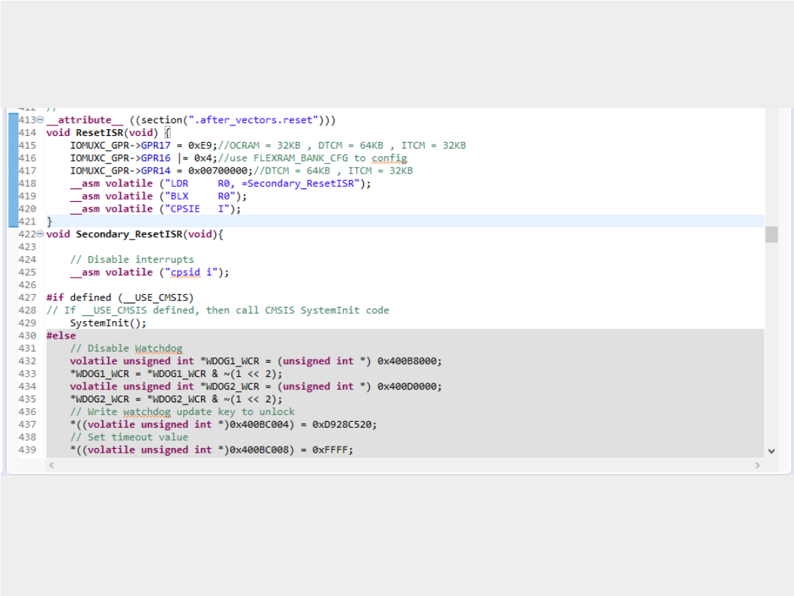
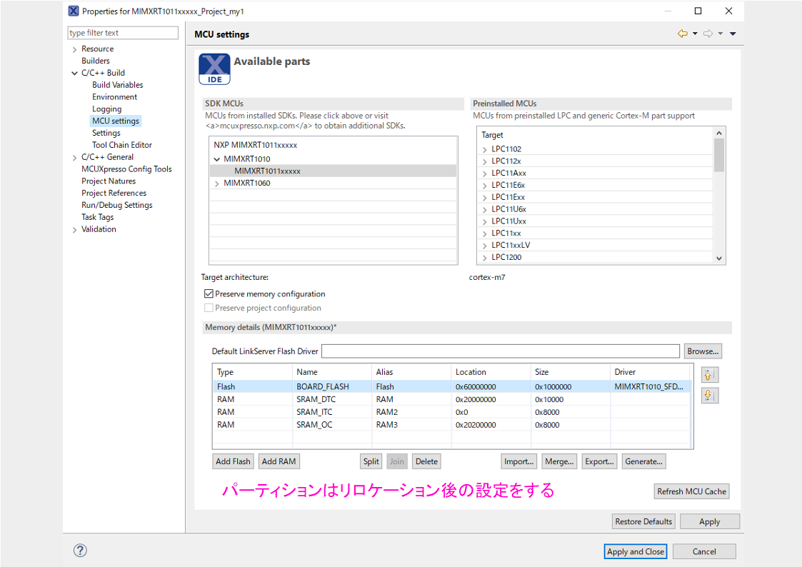
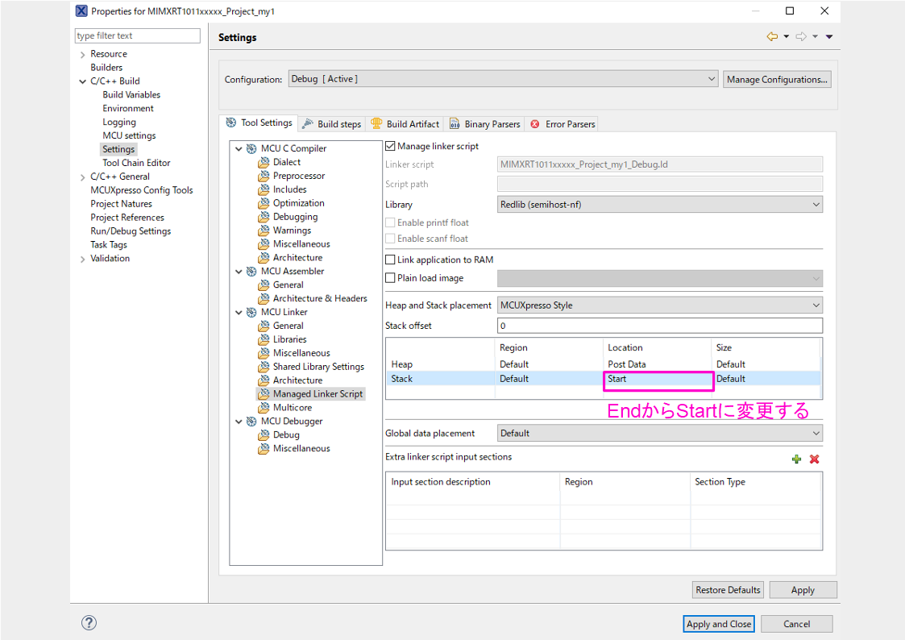

FlexRAMのリロケーション
i.MXRTシリーズのRAMはOCRAM,DTCM,ITCMといった3つのコントローラよりアクセス可能となっており、RAM本体と3つのコントローラをFlexRAMと呼称している。
ここで各種RAMについて軽く説明します。
- OCRAM : On-Chip-RAMのこと
- ITCM : Instruction Tightly-Coupled Memory
- DTCM : Data Tightly-Coupled Memory
TCMというのは日本語では密結合メモリですが、CortexM7コアと同速度で動作し高速で通信可能であることから密結合という名称がついています。
一方でOCRAMはコア周波数の1/4の周波数で動作し528MHzでコアが動作している場合132MHzで動作します。
TCMバスと比較してパフォーマンスが低下することが予想されますが、CortexM7のL1キャッシュがそれを補助するため大抵の場合は気になることはないです。
以上よりRAM容量に余裕があるならITCM,DTCMにデータを配置するのが好ましいということになります。
ここでようやく本題ですが、FlexRAMには各種メモリ容量を変更できる機能が備わっています。
この機能を利用することによりDTCMを多く使いたいなどといった要件を満たすことが可能です。
次のセクションからは、実際の方法と注意点を解説していきます。
FlexRAMのリロケーション
FlexRAMのリロケーションについて説明していきます。
方法としては2つあります。
- eFUSEを設定する
- レジスタ操作による方法
eFUSEは、ワンタイムプログラムメモリなので一度設定してしまうと初期状態がその設定になってしまうのであまりやらないほうがいいと思います。
レジスタによる設定では、各メモリのパーティションを自由に変更することができますので今回はこちらの方法を解説します。
具体的には、GPR17 , GPR16 , GPR14レジスタを設定することでFlexRAMのリロケーションを行います。
レジスタによりFlexRAMのリロケーションを行う場合注意点があります。リロケーションの設定を行っている間は、コードの実行、データアクセスがあってはいけません。 当然ながらチップ起動後はコード、データともにFlexRAMを経由してアクセスが起こるためResetISR内でコードの設定を行うことでそれを回避します。
Reset_ISRを編集するのでstartup_mimxrt1011.cを開き以下のように編集します。
void ResetISR(void) {
__asm volatile ("CPSID I");
IOMUXC_GPR->GPR17 = 0xE9;//OCRAM = 32KB , DTCM = 64KB , ITCM = 32KB
IOMUXC_GPR->GPR16 |= 0x4;//use FLEXRAM_BANK_CFG to config
IOMUXC_GPR->GPR14 = 0x00700000;//DTCM = 64KB , ITCM = 32KB
__asm volatile ("LDR R0, =Secondary_ResetISR");
__asm volatile ("BLX R0");
__asm volatile ("CPSIE I");
}
もともとあったResetISRはSecondary_ResetISRにリネームします。 
次にfsl_flexspi_nor_boot.cを編集します。
次にプロジェクトのメモリパーティションを設定します。 ここでの設定はリロケーション後のものを利用します。 
次にスタックのデフォルト配置を変更します。 この設定はリロケーション時にデータがスタックプッシュされた際のケアらしくフォーラムで言及されていました。 
ここまでの作業でFlexRAMのリロケーションは完了ですが、プログラムがフォールトしたときのチェック用にメインループでLチカを回しておきます。
すべての記述が終わったらビルドを行います。
build resultを確認し正しいメモリパーティションになっていることを確認します。
Memory region Used Size Region Size %age Used
BOARD_FLASH: 24924 B 16 MB 0.15%
SRAM_DTC: 49416 B 64 KB 75.40%
SRAM_ITC: 0 GB 32 KB 0.00%
SRAM_OC: 0 GB 32 KB 0.00%
Finished building target: MIMXRT1011xxxxx_Project_my1.axf
プログラムを実行するとメモリに配置した変数に正しくアクセスできていることがわかると思います。 またPeripheralsタブでGPRレジスタを確認することでGPR17 , GPR16 , GPR14レジスタがきちんとセットされていることが確認できます。
最後に今回の検証用コードを張っておくので参考までに
/**
* @file MIMXRT1011xxxxx_Project_my1.c
* @brief Application entry point.
*/
#include <stdio.h>
#include "board.h"
#include "peripherals.h"
#include "pin_mux.h"
#include "clock_config.h"
#include "MIMXRT1011.h"
#include "fsl_debug_console.h"
/* TODO: insert other include files here. */
/* TODO: insert other definitions and declarations here. */
/*
* @brief Application entry point.
*/
uint32_t delayCount;
void SysTick_Handler(void)
{
if(delayCount != 0x00)
{
delayCount--;
}
}
void Systick_delay(uint32_t ms){
SysTick->LOAD = (SystemCoreClock/1000 & SysTick_LOAD_RELOAD_Msk) - 1;
delayCount = ms;
while(delayCount!=0x00);
}
uint32_t buffer[1024*10];
int main(void) {
/* Init board hardware. */
BOARD_InitBootPins();
BOARD_InitBootClocks();
BOARD_InitBootPeripherals();
/* Init FSL debug console. */
BOARD_InitDebugConsole();
PRINTF("Hello World\n");
SysTick_Config(SystemCoreClock/1000-1);
/* Force the counter to be placed into memory. */
/* Enter an infinite loop, just incrementing a counter. */
PRINTF("%x : %d\n",&buffer[1024*10-1],buffer[1024*10-1]);
while(1) {
GPIO_PinWrite(GPIO1, 11, 1);
Systick_delay(500);
GPIO_PinWrite(GPIO1, 11, 0);
Systick_delay(500);
}
return 0 ;
}
Memo
今回はFlexRAMのパーティションを変更するリロケーションについて行いました。 リロケーションはメモリペリフェラルをいじるので危険度は高めです。最適化段階でどうしてもDTCMを増やしたいといったような極限案件で使うのが好ましいです。
理由は、CortexM7にはI-Cache , D-Cacheがあるのでたいていのプログラムはキャッシュヒットしてくれるためです。 そもそもXIPで起動してる時点で、ボトルネックが大きいのでOCRAMにも配置するような工夫が必要です。
最後に、リロケーション実施時に設定ミスでハードフォールとしてデバッガがつながらなくなることが多々あります。 その場合の対処についてはここ にまとめましたので読んでみてください
Ref
- AN12077 Using the i.MX RT FlexRAM
- FlexRAM and Linker Problem
- How to reconfigure the flexRAM on i.mxRT 1062 using MCUXpresso
- FlexRAMのパーティションを変更する方法